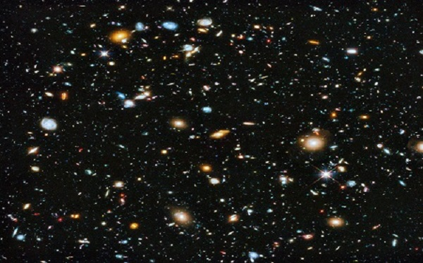
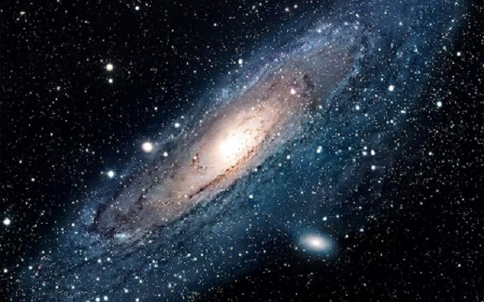
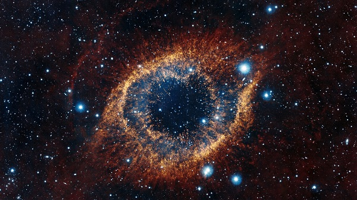
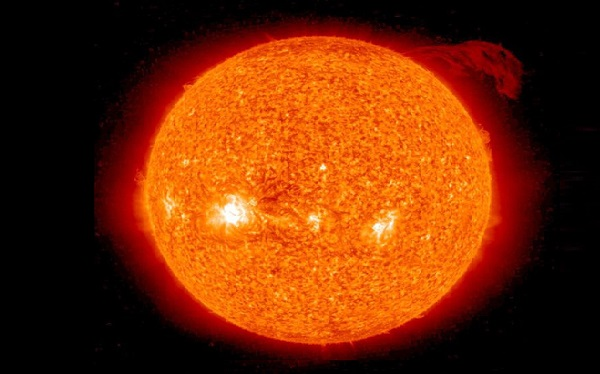
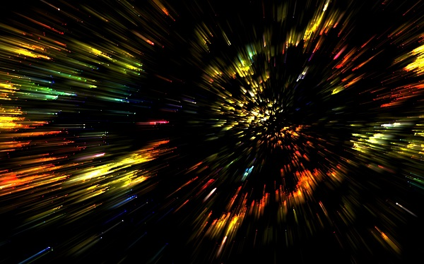

Космическое пространство
Косми́ческое простра́нство (ко́смос) — относительно пустые участки Вселенной, которые лежат вне границ атмосфер небесных тел. Вопреки распространённым представлениям, космос не является абсолютно пустым пространством — в нём существует очень низкая плотность некоторых частиц (преимущественно водорода), а также электромагнитное излучение и межзвёздное вещество.

Этимология
В своём изначальном понимании греческий термин «космос» (порядок, миропорядок) имел философскую основу, определяя гипотетический замкнутый вакуум вокруг Земли — центра Вселенной. Тем не менее, в языках на латинской основе и её заимствованиях к одинаковой семантике применяют практический термин «пространство» (так как с научной точки зрения обволакивающий Землю вакуум бесконечен), поэтому в русском и близких ему языках в результате реформенной корректировки родился своеобразный оксюморон «космическое пространство».

Границы
Чёткой границы не существует, атмосфера разрежается постепенно по мере удаления от земной поверхности, и до сих пор нет единого мнения, что считать фактором начала космоса. Если бы температура была постоянной, то давление бы изменялось по экспоненциальному закону от 100 кПа на уровне моря до нуля. Международная авиационная федерация в качестве рабочей границы между атмосферой и космосом установила высоту в 100 км (линия Кармана), потому что на этой высоте для создания подъёмной аэродинамической силы необходимо, чтобы летательный аппарат двигался с первой космической скоростью, из-за чего теряется смысл авиаполёта. Астрономы из США и Канады измерили границу влияния атмосферных ветров и начала воздействия космических частиц. Она оказалась на высоте 118 километров, хотя сами NASA считают границей космоса 122 км. На такой высоте шаттлы переключались с обычного маневрирования с использованием только ракетных двигателей на аэродинамическое с «опорой» на атмосферу.

Солнечная система
Пространство в Солнечной системе называют межпланетным пространством, которое переходит в межзвёздное пространство в точках гелиопаузы солнцестояния. Вакуум космоса на самом деле не является абсолютным — в нём присутствуют атомы и молекулы, обнаруженные с помощью микроволновой спектроскопии, реликтовое излучение, которое осталось от Большого Взрыва, и космические лучи, в которых содержатся ионизированные атомные ядра и разные субатомные частицы. Также есть газ, плазма, пыль, небольшие метеоры и космический мусор (материалы, которые остались от деятельности человека на орбите). Отсутствие воздуха делает космическое пространство (и поверхность Луны) идеальными участками для астрономических наблюдений на всех длинах волн электромагнитного спектра. Доказательством этого являются фотографии, полученные при помощи космического телескопа Хаббл. Кроме того, бесценную информацию о планетах, астероидах и кометах Солнечной системы получают с помощью космических аппаратов.

Скорости, необходимые для выхода в ближний и дальний космос
| Первая космическая скорость - | 7,9 км/с — скорость для выхода на орбиту вокруг Земли; |
| Вторая космическая скорость - | 11,1 км/с — скорость для ухода из сферы притяжения Земли и выхода в межпланетное пространство; |
| Третья космическая скорость - | 16,67 км/с — скорость для ухода из сферы притяжения Солнца и выхода в межзвёздное пространство; |
| Четвёртая космическая скорость - | около 550 км/с — скорость для ухода из сферы притяжения галактики Млечный Путь и выхода в межгалактическое пространство. |
